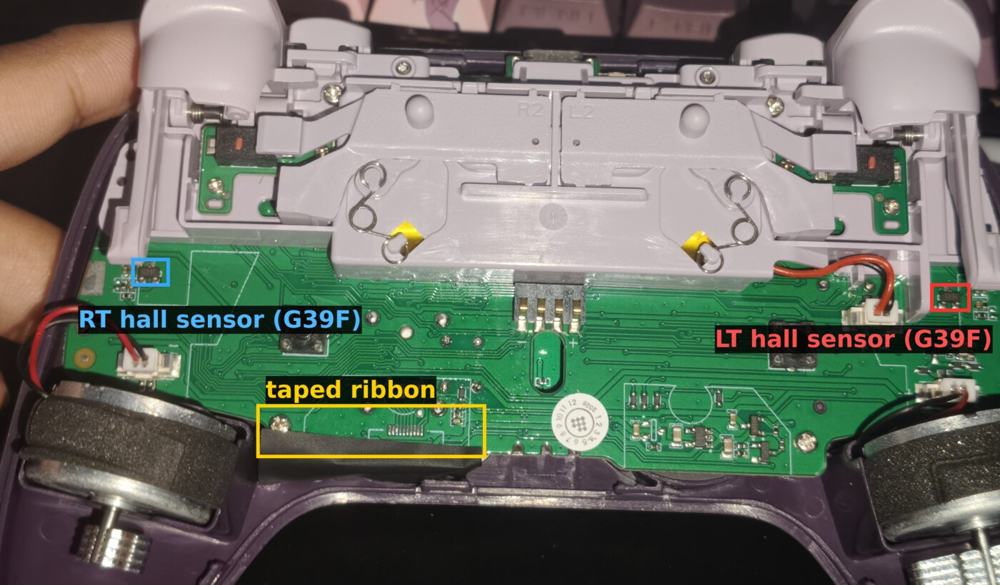
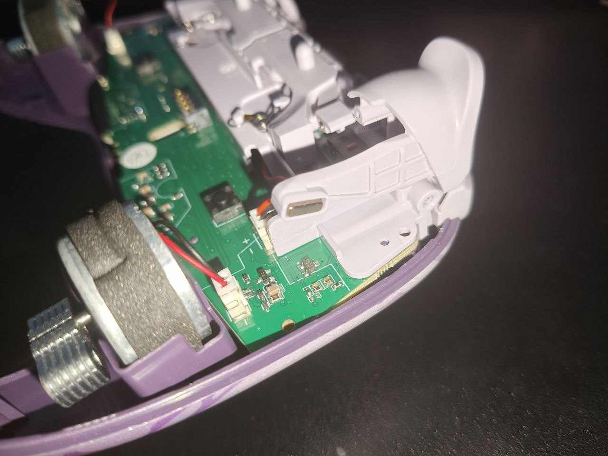
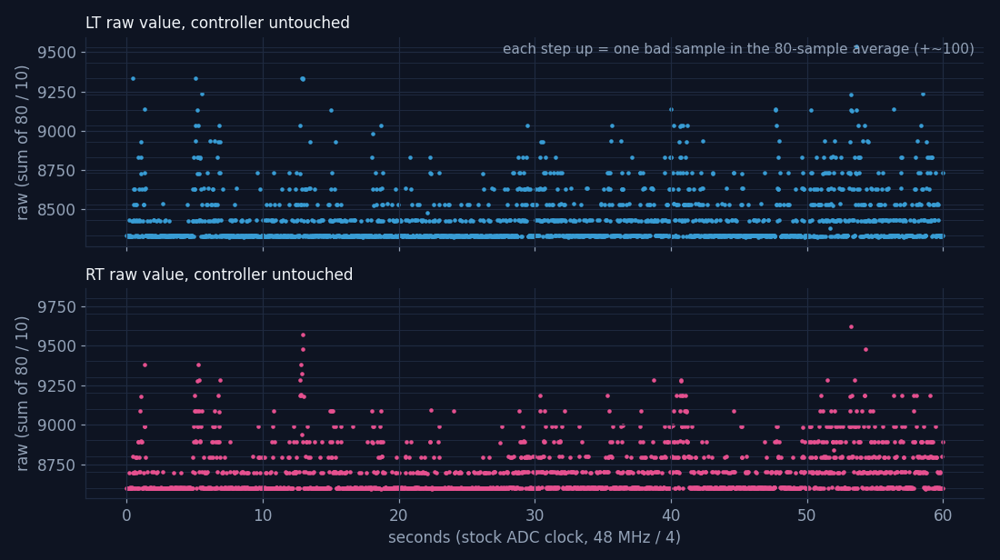
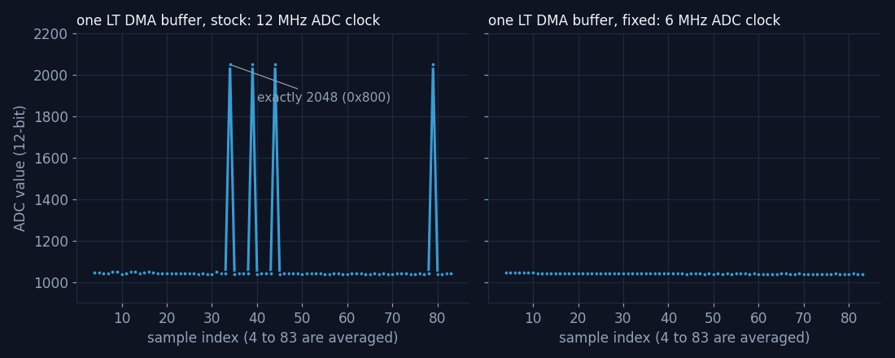

My 8BitDo Ultimate 2 Wireless started pressing its own triggers. LT, and later RT, sat at 20 to 70% with nothing touching them. Everyone's first guess (mine too) was a dying hall sensor. It wasn't. The co-processor that reads the triggers runs its ADC faster than this particular chip can handle, and every now and then a conversion comes out as exactly 2048. Halving the ADC clock in the firmware fixed it completely.
This is everything learned on the way: the wrong turns, how 8BitDo's updater and bootloader work, how to get raw sensor data out of a stock controller without soldering anything, the proof, and the 8-byte patch. Every number here was measured on the controller or read from the firmware. Things that were not verified say so.
Written 2026-10-22. Firmware analysed: 8BitDo's official Ultimate 2 Wireless update 1.10
(145,436 bytes, SHA-256 968edee5…f5eb87), plus 1.09 for comparison.
This only matters if your controller has the same fault. If your triggers are fine, there is nothing to fix. The patch has been tested on exactly one controller.
-2Changelog
Newest first. Small wording fixes are not listed.
2026-10-22
- First version.
-1What?
Find out why the triggers of one Ultimate 2 Wireless press themselves, and fix it if it can be fixed. It could: it's a firmware setting, not broken hardware.
00How to flash the fix
Linux only as written (the tools talk to /dev/hidraw* directly). You need Python 3 and, to
build the patch, llvm-mc and llvm-objcopy (nix-shell -p llvm python3 on NixOS).
0.1 Get the official files. 8BitDo's firmware list is public:
curl -s -X POST https://support.8bitdo.com/restapi/link/v1/client/firmware/select \
-H 'Content-Type: application/json' -d '{"firmware_type":94,"beta":1}'
Download the fileURL of 1.09 and 1.10 from the reply. Check them (the reply's md5 field
is the same for both versions, so don't trust it):
| File | SHA-256 |
|---|---|
| 1.09 | f754df15d0a3fde833f231c7d9d585490e22adfe9145a8dc1b7c85ab5515cbc1 |
| 1.10 | 968edee528c23d56e2059288f90c109fa5135f060de5b403e72d0b6c50f5eb87 |
0.2 Build the patched 1.10.
python3 tools/patch_ch32.py u2w_1.10.dat u2w_1.10_adcfix.dat --adcdiv 8 --adc-only
sha256sum u2w_1.10_adcfix.dat
# c5e5d60c3929d5a0701c5dbd91736bc77fc817fcf91f82146f286263d5962833
If the hash differs, stop.
0.3 Find the controller's two HID nodes. Plug it in with a USB cable. The vendor node is the
one whose report descriptor contains usage page 0xff7a:
for h in /sys/class/hidraw/hidraw*; do
od -An -tx1 -v $h/device/report_descriptor | tr -d '\n' | grep -q '06 7a ff' && basename $h
done
0.4 Flash 1.09, then the patch. The bootloader only re-flashes the co-processor when its version number changes (5.5), and the patch keeps 1.10's number. So go through 1.09 first:
python3 tools/bootflash.py /dev/hidrawV jump # V = vendor node from 0.3
# the controller re-enumerates as 2dc8:3208 "8BitDo Boot"; find its hidraw (B):
grep -l 'HID_NAME=8BitDo 8BitDo Boot' /sys/class/hidraw/*/device/uevent
python3 tools/bootflash.py /dev/hidrawB flash u2w_1.09.dat
# boots into 1.09. Repeat 0.3, then:
python3 tools/bootflash.py /dev/hidrawV jump
python3 tools/bootflash.py /dev/hidrawB flash u2w_1.10_adcfix.dat
flash checks the PID, erases, writes, reads everything back and only then restarts the
controller. It refuses to touch anything below 0x5000, where the bootloader lives.
0.5 Going back to stock. Same thing with the official files: 1.09, then 1.10. Flashing
stock 1.10 straight over the patch keeps the patched co-processor, because the version
numbers match.
0.6 If it ends up stuck in "8BitDo Boot". Nothing is broken: the bootloader is untouched.
Flash any official file with bootflash.py ... flash, or just bootflash.py /dev/hidrawB reset
if the last write completed. The official web updater can also leave it there, see 5.3.
01The controller
| Controller | 8BitDo Ultimate 2 Wireless (2.4 GHz), the Evernight edition. It runs the regular Ultimate 2 Wireless firmware |
| Updater IDs | firmware_type 94, product ID 0x6012 |
| USB, normal | 2dc8:310b "8BitDo Ultimate 2 Wireless Controller for PC" |
| USB, bootloader | 2dc8:3208 "8BitDo Boot" |
| Firmware on it | 1.10 (2026-05-13). 8BitDo's server only offers 1.09 and 1.10 |
| Triggers | hall effect: a magnet in the tip of each trigger arm, a 3-pin SOT-23 sensor marked G39F on the back board under each tip |
Not to be confused with the Ultimate 2 Bluetooth (firmware_type 97): different hardware,
encrypted firmware, nothing here applies to it.

This is the back of the controller, so LT is on the right of the photo (the trigger bracket says
L2 on that side). Each G39F sits right under its trigger's magnet. There are no wires to the
sensor itself: the magnet moves closer, the voltage on the sensor's output pin changes. G39F
probably is a GoChip GH39FKSW linear hall sensor (same package and name fragment), not confirmed.

02The symptom
With nothing touching it, 8BitDo's Ultimate Software showed LT at 28 to 56% and jumping around.
RT was fine at first and started doing the same a day later. Anything above 0x4D (77 of 255,
about 30%) also sets the digital LT/RT button bits in the report (4.2), so games saw real trigger
presses. The owner remembered it starting after a firmware update.
It comes and goes. Some captures, all with the controller lying on the desk:
| Firmware | Length | LT | RT |
|---|---|---|---|
| 1.10 | 5 s | 0 to 191, 96 events | 0 to 69, 8 events |
| 1.10, right after flashing it | 30 s | 0 to 137, 5,658 events | quiet |
| 1.09 | 30 s, quiet phase | 0, no events | 0, no events |
| 1.09 | 30 s, a bit later | 0 to 179, 21,017 events | 0 to 83, 66 events |
"Events" are value changes seen by Linux (evdev, tools/live.py), so they also say how busy it
was. Values are the report's 0 to 255.
03What it wasn't
Most of the time went into things that turned out to be wrong. They're kept here because each one looked convincing at the time, and two of them would have ended the investigation early.
3.1 The bumpers
The first description was "LB/RB glitching". The main chip's button code (4.2) scans a 4×6 key matrix every 1 ms and reports each key from a single sample, with no debounce, so a bouncy bumper switch would pass straight through. All true, and all about the wrong input: the video showed the analog LT, not a bumper.
3.2 "1.10 broke it"
Flashing 1.09 gave 0 events in 5 s and again in 30 s. Back on 1.10: 5,658 events in 30 s. That looked like proof, and 1.10's co-processor changes are almost all lighting code, so the story became "the new RGB code disturbs the analog readings". Then 1.09 drifted again: 21,017 events in 30 s. The drift comes in phases, and short A/B tests happily land in a quiet one. Both versions set the ADC clock the same way (7.2), so the version never mattered.
3.3 Calibration
8BitDo's software can recalibrate the triggers, and the same commands work over raw HID
(11.1): 81 05 00 3a 00 resets the trigger calibration, 81 05 00 3a 01 saves the newly learned
range. Both were acknowledged. 30 s untouched afterwards: LT 0 to 139 with 2,271 events. No change.
3.4 The lighting
Since 1.10 mostly changed RGB code, the lighting was switched off over HID (81 04 40 00 06,
11.1). 60 s before vs after: LT 23,900 → 8,800 events, RT 30,100 → 23,800. Still drifting.
3.5 Hall sensors, magnets, the ribbon
Before opening it, a flex test: pressing the left grip pegged LT at 255, pressing the middle of the back woke both triggers, pressing the right side did nothing. That pointed at the left sensor and the ribbon in the middle.
Opened up, the multimeter found the sensor pins: one at 0 V (GND), one at a steady 3.35 V (VCC, doesn't move when the trigger is pulled), one that follows the trigger (OUT). The meter's other readings on OUT were impossible (+7.68 V against GND, −17.67 V from VCC to OUT on a 3.35 V part), so it couldn't say anything useful about OUT.
Poking around the bare board with a plastic stick (each sensor, the ribbon, the contacts in the middle, the trigger motor plug) while logging: no spot made a difference. What the log did show: the drift hit both triggers at the same moments, and the jumps landed on the same few values over and over (LT 28, 52, 70, 83, 95, 133; RT 25, 48, 68, 80, 94). Two sensors failing in lockstep is unlikely, so it had to be something they share. That was the first real clue, and at that point the suspects were the sensors' shared power, ground, or the ribbon.
The flex test result is still not explained, see 10.2.
3.6 Filtering it away
Two firmware patches tried to hide the drift: a spike filter, then a rest deadzone (section 9). Both helped and neither fixed it. They were useful anyway: they showed the output moving in fixed steps, which is what led to looking at raw ADC values.
04Two chips in one update file
4.1 The .dat
| Offset | Content |
|---|---|
0x00 |
28-byte header: version (0x6e = 1.10), load address 0x5000, size 0x23800, PID 0x6012, a 32-bit field that didn't match any checksum tried, 0, 0 |
0x1c |
main chip image (Telink, KNLT at +8). Word +0x18 = end of its code (0x17a64 in 1.10), followed by a CRC32 |
0x1c + 0x17a68 |
the co-processor's application, to the end of the file |
Offsets below are inside the image (header stripped) unless they're co-processor addresses.
4.2 Main chip: Telink
A Telink chip (TC32 instruction set) does USB, the 2.4 GHz radio, the buttons, remapping and
macros, and builds the reports. Buttons are a 4×6 matrix scanned every 1 ms. Analog trigger
values arrive from the co-processor over a UART, and anything above 0x4D also sets the digital
LT/RT bits. Decompiled with Ghidra and the TC32 module from trust1995/Ghidra_TELINK_TC32.
4.3 Co-processor: WCH RISC-V
The rest of the file is a plain RISC-V application for a WCH microcontroller. It reads the sticks and triggers, the gyro, drives the lighting and stores calibration. Most likely a CH32X035: 48 MHz fixed clock, 20 KB RAM, and an ADC clock register that matches WCH's CH32X035 SDK (7.5). Inferred from the code, the chip marking was not read.
| 1.10 | |
|---|---|
| Load address | 0x3000 (its own 12 KB bootloader sits below) |
| RAM code | flash 0x3100, 0x1a04 bytes, copied to 0x20000000 at boot. Far calls from there show up as 0xe000xxxx when disassembled at the flash address |
| gp | 0x20002288 |
| Stack top | 0x20005000 (20 KB RAM) |
| Vector table | mtvec = 0x3004, vectored. Reserved slots 4 and 7 hold 8BitDo's length and version (5.5) |
4.4 1.09 vs 1.10
The main chip's code is identical except for the power-off routine. The co-processor changes are lighting code (a new RGB type handler, extra logging) and one new UART command. Nothing touches the ADC or the triggers, which fits 3.2.
05The update path and the bootloader
5.1 The official updater
web.8bitdo.com is a WebHID page and works on Linux in Chromium and Brave, no driver needed.
It lists every version the server has (so 1.09 is selectable), and Ctrl+click on the update
button opens a file picker for a local .dat. Its protocol code is in
p_connectDevice-*.js; tools/bootflash.py is a reimplementation of the bootloader-mode part.
5.2 Bootloader protocol
In the bootloader the controller is 2dc8:3208 with one HID interface: 64-byte reports, no
report ID. Each request is 05, cmd u16, params u16, len u16, crc16 u16, total_len u32,
offset u32, data… (little endian). The reply repeats the fields from byte 2; success is
reply cmd 0 with params equal to the command sent, reply data starts at byte 18.
| cmd | What | Notes |
|---|---|---|
| 8 | read PID | answers 0x6012 |
| 5 | read flash | 32 bytes at offset |
| 4 | erase | total_len bytes from offset |
| 3 | write | 46 bytes, crc16 = CRC-16/MODBUS of the data |
| 7 | reset | no reply, boots the image |
| 195 | "read CRC" | returned values didn't match a CRC-16 of the data, not used |
| 196 | save | never answers (5.3) |
The image is written at 0x5000. The bootloader lives at 0 to 0x5000; the tools here refuse
to erase or write below 0x5000.
5.3 Why the website says "update failed"
After writing, the website sends cmd 196 and waits for a reply that never comes. It reports
"update failed" and never sends the reset, so the controller stays in "8BitDo Boot". The image
was fine: all 0x23800 bytes read back identical to the official file, and a plain reset
(cmd 7) booted it. bootflash.py skips cmd 196.
5.4 Getting into the bootloader
From the running controller, on the vendor interface (usage page 0xff7a), send report
81 05 00 51 00. The firmware writes 0x5a into retained analog register 0x3c and reboots,
and the bootloader sees the flag and stays. The website's own jump command (12) does nothing on
this model.
5.5 What the bootloader checks before booting
Read out the bootloader with cmd 5 (0 to 0x5000) and decompiled it with the same TC32 setup.
If the 0x3c flag isn't set:
- Main image: the Telink code ends with a standard CRC32; the byte-sum of everything before that CRC must equal the word right after it.
- Co-processor image: length = u32 at co-processor offset
0x14; the 32-bit byte-sum of the firstlengthbytes must equal the u32 stored right after them. Otherwise it stays in the bootloader. This is what rejected the first patched file here: the new code sat pastlengthand the sum was stale. - Co-processor version: it reads the version from the co-processor (its address
0x08003020) and compares it with u32 at offset0x20of the image. Only if they differ does it re-flash the co-processor: erase 4 KB pages, write 256-byte chunks up tolength, then send the stored sum for the co-processor's own bootloader to check.
Point 3 is why installing the patch goes through 1.09 first (0.4).
| 1.09 | 1.10 | |
|---|---|---|
co-processor length |
0xbbdc |
0xbc44 |
| stored sum | 0x004c9bc0 |
0x004cb5e5 |
| version word | 0x6d |
0x6e |
06How a trigger gets read
All co-processor addresses, 1.10.
6.1 ADC and DMA
The ADC reads six inputs: four stick axes, LT and RT. One channel at a time: DMA collects 84
conversions into a buffer, an interrupt copies it into that channel's array (six arrays of 84
values at gp-836) and starts the next channel. The ADC clock is set once at init (7.5).
6.2 Averaging
A loop sums samples 4 to 83 of each array (sample 0 still holds the previous channel) and
divides by 10, so the "raw" value is 8 × the mean of 80 conversions. For LT and RT that value
goes straight into the raw table at gp-1796 (entries 4 and 5); the stick values get more
processing first.
6.3 Scaling
scale(axis) at 0x5920: (raw - min) * 1023 / (max - min), clamped to 0 to 1023, with min and
max from calibration. Then a 1024-entry response curve at 0xdec0 turns that into 0 to 255.
The curve is steep near zero (curve[26] = 24), so small values get amplified. The result goes
over the UART to the main chip and into the USB report.
The two calls that do this for LT and RT are in the RAM code at flash 0x3a06 and 0x3a12.
6.4 What one bad sample does
If one of the 80 samples reads 2048 instead of 1041, the raw value goes up by (2048 − 1041) / 10 ≈ 100. This unit's calibrated trigger range is about 4,000 raw, so that's 26 of 1023 after scaling, and 24 of 255 in the report: a phantom 9% press from one wrong conversion out of 80. Two bad samples, 47. Three, 67. That's the ladder of repeating values from 3.5 (the exact numbers shift a little with where each trigger rests).
07Root cause: the ADC is clocked too fast
7.1 Getting raw values out without soldering
The firmware has no debug output for the ADC, and measuring the sensors with a multimeter went
nowhere (3.5). But there is one existing round trip from the PC into the co-processor and back:
81 04 41 00 makes the main chip ask the co-processor for its lighting mode (UART command
0x1b), and the one-byte answer comes back to the PC in byte 18 of the reply.
So the diagnostic builds point the co-processor's call at 0x4862 (which fetches that byte) at
a small routine of their own, and the byte becomes a data stream. A frame starts with FF, the
data is split into 7-bit pieces so FF can't appear inside it. Polling as fast as USB allows
gives about 270 bytes per second:
--diag: raw LT, RT and stick X from the raw table, 39 frames per second (tools/telem.py)--diag2: a full copy of the LT and RT sample arrays, 84 + 84 values, about one every 1.2 s (tools/telem2.py)
Everything else keeps working while it runs.
7.2 Raw values: a lattice

60 s untouched at the stock clock (data/telem_raw_div4_60s.log). LT rests at 8330 and RT at
8602, and every excursion lands exactly 100 (LT) or about 97 (RT) above the last step:
8330, 8430, 8530, 8630… The stick, read the same way, mostly stayed within ±10 of 17930
(17788 to 18020 over the minute). Noise doesn't make steps of exactly 100.
Whole extra samples do: 100 raw is one sample being about 1,000 off (6.4).
7.3 The sample arrays: exactly 2048

72 snapshots at the stock clock (data/snap_div4_90s.log, tools/snapstats.py). Samples 4 to
83, the ones that get averaged:
| LT | RT | |
|---|---|---|
| Rest value | 1041 | 1075 |
| Spread of the normal samples | ±2 (std 2.1) | ±2 (std 1.5) |
| Bad samples | 122 of 5,760 (2.12%) | 94 of 5,760 (1.63%) |
| Snapshots with at least one | 31 of 72 | 28 of 72 |
| Bad values | 2048 ×113, 1023 ×8, 1052 ×1 | 2048 ×89, 1023 ×3, 1792 ×1, 1055 ×1 |
The bad samples sit at random positions in the array, and they are exactly 0x800 (2048) or
0x3FF (1023). A sensor or a noisy supply would give random wrong values. These are bit patterns.
7.4 Why exactly 2048
The ADC is a successive approximation type: it finds the value one bit at a time, most significant first. "Is the input above half scale?" If yes, set bit 11, then ask about the next half, and so on down to bit 0.
At 1041 the first answer should be no. If the comparator hasn't settled when it's asked and
says yes, bit 11 is set, and every later step correctly decides the input is below each new
threshold, so all the remaining bits come out 0: 0x800. The same thing one step later
(bit 10 wrongly cleared) gives 0x3FF. Wrong decisions on the top bits, where the
comparator needs the most time, are the classic sign of an ADC clocked faster than it can settle.
Why the triggers and not the sticks: a trigger at rest sits near 1040, far below 2048, so a wrong top bit adds about 1,000. A centred stick sits around 2240, close to 2048, so the same mistake costs much less, and the stick deadzone hides it.
7.5 The clock
The ADC init writes the clock setting once, into ADC register CTLR3 (0x40012450, bits 0 to 8):
| 1.09 | 1.10 | |
|---|---|---|
| Code | c.li a1,19 / jal 0x9940 at 0x6ca6 |
the same at 0x6cd6 |
| Value | 0x13 |
0x13 |
In WCH's CH32X035 SDK, 0x13 is ADC_CLK_Div4: 48 MHz / 4 = 12 MHz. The SDK's divider
values follow ((N-1) >> 1) << 4 | (N-1), so /8 is 0x37. Whether 12 MHz is inside the chip's
rated range was not checked: it's the value 8BitDo ships, and it fails on this one.
7.6 The test
Same diagnostic build, only the clock changed to /8 (6 MHz), 88 snapshots
(data/snap_div8_90s.log):
| 12 MHz (stock) | 6 MHz | |
|---|---|---|
| LT bad samples | 122 of 5,760 | 0 of 7,040 |
| RT bad samples | 94 of 5,760 | 0 of 7,040 |
| Snapshots with any | 31 and 28 of 72 | 0 of 88 |
08The fix
8.1 What changes
Stock 1.10 plus the clock, nothing else:
| Where (co-processor) | Stock | Patched |
|---|---|---|
0x6cd6 |
c.li a1,19 / jal 0x9940 (cd 45 ef 20 90 46) |
jal 0xec60 / c.nop |
0xec60 |
zero padding | li a1,0x37 / j 0x9940 |
length word (offset 0x14) |
0xbc44 |
0xbc68 |
| byte-sum (after the length) | 0x004cb5e5 |
recomputed |
The helper loads the /8 value and jumps into the original clock function, which returns to the
code right after 0x6cd6. The length grows by the helper so the bootloader sums and installs
it (5.5). tools/patch_ch32.py --adcdiv 8 --adc-only builds it and checks the original bytes
first.
8.2 Result
| Test | Result |
|---|---|
5 min untouched (data/adcfix_untouched_300s.log) |
0 LT events, 0 RT events (a separate check right after showed the stick still reporting, so the reader was alive) |
Owner's pull test, 4.5 min (data/adcfix_user_pull_test.log) |
45 LT and 38 RT presses, all real: full pulls to 255 and partial ones (61 to 98). No spikes. 2.5 minutes in the middle with no events at all |
| Version | still reports 1.10 |
On stock firmware every capture showed drift within seconds.
8.3 What it costs
Each conversion takes twice as long. Estimated from the settings (not measured), one round over all six inputs goes from about 0.7 ms to about 1.5 ms, so the analog values in each report are on average well under 1 ms older. The USB report rate, the buttons and the gyro don't change.
09The patches that came before the fix
All built by tools/patch_ch32.py and kept so the numbers can be checked.
9.1 Getting code into the co-processor
The co-processor image ends with about 340 bytes of zero padding after its initialised data
(0xec44 to 0xed98), enough for small routines. The two trigger calls at 0x3a06/0x3a12 and
the lighting-mode call at 0x4862 are auipc/jalr pairs and easy to point elsewhere. The early
builds also set bit 0x40 in the lighting-mode answer, as a marker that the patched code was
really running (with the 1.09 hop from 0.4, it was).
9.2 Spike filter (T=32 N=24)
A change of up to 32 (of 1023) passes at once; a bigger jump only counts after 24 calls in a row. 60 s untouched: off zero 5.2% (LT) and 6.2% (RT) of the time, against 23 to 67% in short stock captures. Better, but most of what was left climbed one step at a time, and each step was "small".
9.3 Rest deadzone (DZ=115)
Scaled values under 115 read 0 and the rest is stretched back to 0 to 1023, in front of the filter. The deadzone itself worked (the new steps showed up exactly where predicted), but the next 60 s landed in a bad phase: off zero 21% and 25% of the time, mostly 5 to 8 steps up. A deadzone big enough for the bad phases would have eaten about 30% of the trigger.
9.4 Diagnostic builds
--diag and --diag2 (7.1). They also carry the 9.2/9.3 code; the raw values they report are
from before it.
10Corrections and open questions
10.1 Corrections
Things said during the investigation that turned out wrong. Kept so nobody repeats them.
| Said | Actually |
|---|---|
| The bumpers glitch | It was the analog LT (3.1) |
| 1.10 introduced the drift | It comes in phases and is on both versions; 1.09 sets the same clock (3.2, 7.5) |
| The new lighting code disturbs the ADC | Lighting off changed nothing that matters (3.4) |
| Faulty left hall sensor, ribbon or magnet | Both triggers fail in lockstep with bit-pattern values; the sensors are fine (7.3) |
| Each step of the ladder is one ADC count, and the trigger range is only about 40 counts | Each step is one bad sample out of 80, about 100 raw. The range is about 4,000 raw (6.4) |
| The update file's co-processor part has no checksum | Length at 0x14, byte-sum right after it, checked by the bootloader (5.5) |
| The website's "update failed" means the flash failed | The write completes, the bootloader just never answers the save command (5.3) |
10.2 Open questions
- The flex test. Before opening the controller, pressing the left grip pegged LT at 255 and pressing the middle of the back woke both triggers (3.5). Bad ADC samples don't explain a solid 255. Maybe flexing moved the trigger arm, maybe it landed in a bad phase. Not repeated with the fix.
- Why only this unit. The replacement controller, same firmware, doesn't drift. Probably a slower ADC on this particular chip. A guess.
- Why it comes in phases. Minutes of quiet, then bursts. Temperature or supply voltage are the obvious suspects; nothing was measured.
- Other units. Untested. If yours drifts the same way (steps of the same size on both triggers), the diagnostic builds in 7.1 can check it without opening anything.
- The chip. CH32X035 is inferred from the code (4.3).
- The cost. 8.3 is an estimate. Counting ADC rounds per second on stock and patched would settle it.
11Reference
11.1 HID commands (running controller)
Output report 0x81 on the vendor interface (usage page 0xff7a), 64 bytes including the
report ID. tools/hidcmd.py /dev/hidrawN 81 ... sends one and prints the replies.
| Send | Does | Reply |
|---|---|---|
81 05 00 21 01 |
read version | 02 22 6e … = 1.10 |
81 05 00 3a 00 |
reset trigger calibration | 02 3b … |
81 05 00 3a 01 |
save trigger calibration | 02 3b … |
81 05 00 36 00 / 01 |
reset all / stick calibration | |
81 04 40 00 <mode> |
set lighting mode, saved | 02 04 04 00 40 … |
81 04 41 00 |
read lighting mode | byte 18 |
81 05 00 51 00 |
reboot into the bootloader (5.4) | none, it disconnects |
Lighting modes: 0 none, 1 power-on, 2 dynamic (default), 3 hot wheel, 4 solid, 5 "dynamic mingmo", 6 off, 7 max.
11.2 Co-processor addresses (1.10)
| Address | What |
|---|---|
0x3a06, 0x3a12 |
calls scale(4) (LT) and scale(5) (RT), RAM code |
0x4862 |
call that fetches the lighting mode for UART command 0x1b, RAM code |
0x5920 |
scale(axis): raw to 0..1023 |
0x6cd6 |
ADC clock setup (0x13 = /4) |
0x9940 |
writes the ADC clock register (ADC + 0x50) |
0xdec0 |
response curve, 1024 bytes |
0xec44 to 0xed98 |
zero padding (patch space) |
gp-836 |
six arrays of 84 samples |
gp-1796 |
raw table, u16 per axis (4 = LT, 5 = RT) |
11.3 Tools
| File | What |
|---|---|
tools/bootflash.py |
bootloader flasher: jump, probe, flash, reset. Never writes below 0x5000 |
tools/patch_ch32.py |
builds the fix and the earlier patches (8, 9) |
tools/hidcmd.py |
sends one vendor report, prints replies |
tools/live.py |
live LT/RT bars from evdev, logs every change |
tools/telem.py, tools/telem2.py |
read the diagnostic builds (7.1) |
tools/snapstats.py |
bad-sample statistics for telem2.py logs |
tools/farcalls.py |
resolves auipc/jalr far calls in a rizin listing, RAM code aware |
tools/plots.py |
the two charts |
tools/build_readme.py, tools/build_site_page.py |
this README and the vivlos.dev page |
11.4 Data
| File | What |
|---|---|
data/snap_div4_90s.log, data/snap_div8_90s.log |
sample-array snapshots, 12 MHz and 6 MHz (7.3, 7.6) |
data/telem_raw_div4_60s.log, data/telem_raw_div4_probe.log |
raw LT/RT/stick X, stock clock (7.2) |
data/adcfix_untouched_300s.log, data/adcfix_user_pull_test.log |
the fix (8.2) |
data/filter_v1_untouched_60s.log, data/filter_v2_deadzone_untouched_60s.log |
9.2, 9.3 |
data/stock_110_untouched_5s.log, data/stock_109_untouched_4s.log |
short stock captures |
data/stock_110_poke_test.log |
the bare-board poke test (3.5) |
Log lines are unix_time axis value (evdev, 0..255), unix_time LT RT LX (raw) or
unix_time followed by 168 samples (snapshots).